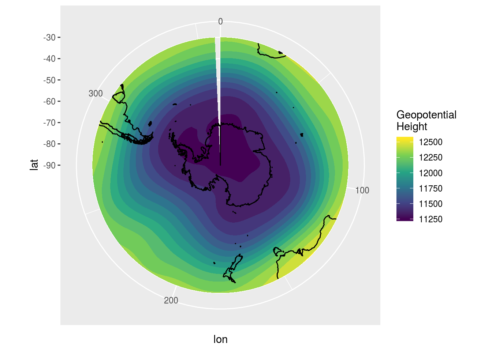
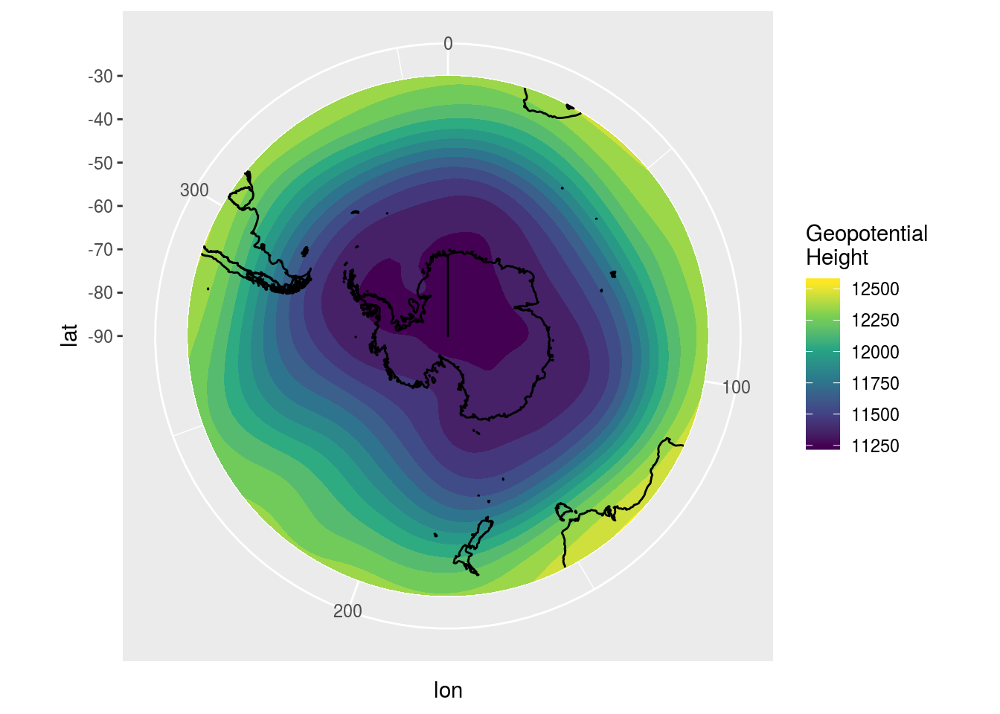
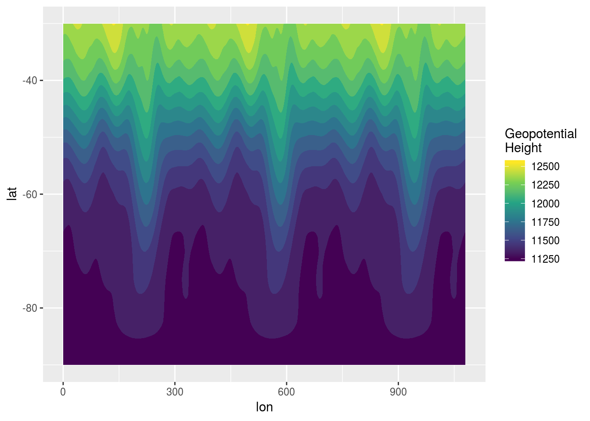
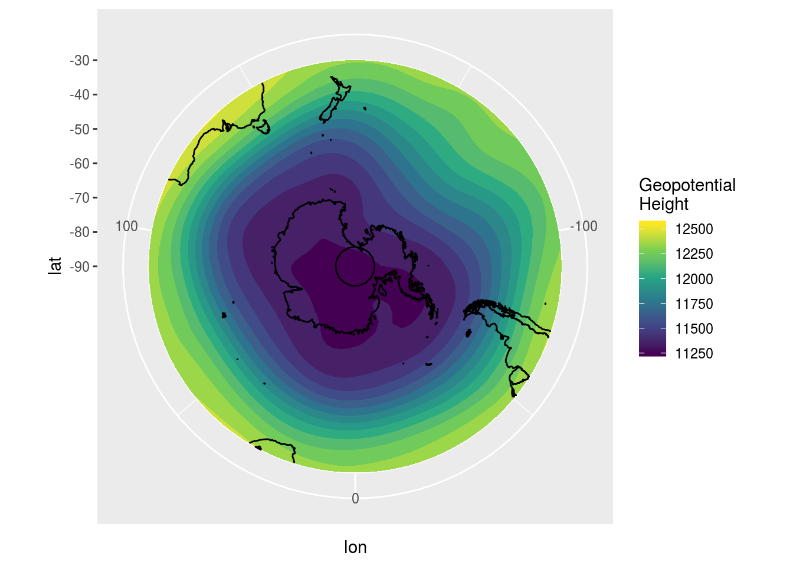

Wrapping around ggplot2 with ggperiodic
In English: Wrapping around ggplot2 with ggperiodicAs an atmospheric scientists, a lot of my research consists on plotting and looking at global fields of atmospheric variables like pressure, temperature and the like. Since our planet is a sphere (well, almost), it is unbound and so longitude is a periodic dimension. That is, to the right of 180°E you go back to 180°W. But ggplot2 and other plotting systems, for the most part, assume linear dimensions.
To show why this is a problem, let us plot a fairly basic scalar field defined in a regular grid with 2.5° of resolution for the southern hemisphere.
ggplot(data, aes(lon, lat)) +
geom_contour_fill(aes(z = gh)) +
map.SH +
scale_fill_viridis_c("Geopotential\nHeight") +
coord_polar()

Did you spot it? The field is defined between 0° and 357.5°. Because 360° is the same as 0°, you would be double counting if you had a value at both extremes. But since ggplot2 only ‘sees’ the data you feed to it, it fails to plot the implied data between 357.5° and 360°.
Defining the problem
The scope of the problem as I see it is much broader than global maps of atmospheric data.
We have a periodic function defined at regular or irregular locations inside one period. Since this finite number of locations actually define the infinite domain of the function, when we plot we want to wrap these locations around any arbitrary domain we need. This should be fast and automatic.
This translates, I think, to having two distinct domains. On the one hand there’s the period defined by the sampled data, and on the other there’s the range we want to wrap this data around. The first is a property of the data, the second one is a property of the visualisation.
Somewhere on the plotting process, then, ggplot2 must repeat the data so that it wraps it around the desired range.
Solving the problem
The ggperiodic package embodies these ideas. First, we define the period of each of the periodic variables on our data. In this case, lon is periodic between 0° and 306°
library(ggperiodic)
data <- periodic(data, lon = c(0, 360))
head(data)
## lon lat level gh time
## 1: 0.0 -30 200 12333.66 2017-01-01
## 2: 2.5 -30 200 12333.17 2017-01-01
## 3: 5.0 -30 200 12335.23 2017-01-01
## 4: 7.5 -30 200 12339.44 2017-01-01
## 5: 10.0 -30 200 12344.92 2017-01-01
## 6: 12.5 -30 200 12351.60 2017-01-01
## lon = [0; 360]
Now data is of a new class of “periodic_df”, but so far the actual content of data has remain unchanged. The magic comes on the second step 🌟. Now we can wrap the data in any arbitrary range. For example, lets change longitude to be between -180° and 180°
data180 <- wrap(data, lon = c(-180, 180))
head(data180)
## lon lat level gh time
## 1: -180.0 -30 200 12311.90 2017-01-01
## 2: -177.5 -30 200 12310.48 2017-01-01
## 3: -175.0 -30 200 12311.84 2017-01-01
## 4: -172.5 -30 200 12316.52 2017-01-01
## 5: -170.0 -30 200 12324.02 2017-01-01
## 6: -167.5 -30 200 12333.00 2017-01-01
You could do this manually every time you what to plot your data, but there’s a better way. When ggplot2 gets a data argument, it doesn’t just pass it along. First, it feeds it to a function called fortify(). ggperiodic implements fortify.periodic_df() so that the wrapping can be performed automatically at plotting time.
ggplot(data, aes(lon, lat)) +
geom_contour_fill(aes(z = gh)) +
map.SH +
scale_fill_viridis_c("Geopotential\nHeight") +
coord_polar()

This is completely automatic 🤖, robust to transformations and very friendly to the user. By default the data is wrapped around the same range as the period, but that can be changed using the same syntax as with wrap(). For example, it could be useful to show three whole periods so that any 360° range could be seen with no interruptions.
ggplot(data, aes(lon, lat), lon = c(0, 360)*3) +
geom_contour_fill(aes(z = gh)) +
scale_fill_viridis_c("Geopotential\nHeight")

Since ggplot2 also uses fortify() for data passed to geoms, it also works there.
ggplot() +
geom_contour_fill(data = data, aes(lon, lat, z = gh), lon = c(-180, 180)) +
map.SH2 +
scale_fill_viridis_c("Geopotential\nHeight") +
coord_polar()
## Warning: Ignoring unknown parameters: lon

In this case works well but there are some limitations related to the somewhat ugly hack I had to use to pass the extra parameters to fortify.periodic_df(). If used on a layer, the name of the periodic dimension must not be the same as any possible aesthetic or any other arguments passed to the geom, i.e. having x or binwidth as the periodic dimension is verboten. Also there’s an annoying warning 😤.
I’ve tried to make the periodic information sticky (thanks to the sticky 📦) across data manipulations, but I’ve still haven’t tested thoroughly. And since I mostly use data.table, I’m not familiar enough with dplyr to do know the whole range of possible transformations. Issues are welcome!
In any case, if or when you get tired of all this nonsense, you can just remove all periodicity information and go on with your life.
data <- unperiodic(data)
head(data)
## lon lat level gh time
## 1: 0.0 -30 200 12333.66 2017-01-01
## 2: 2.5 -30 200 12333.17 2017-01-01
## 3: 5.0 -30 200 12335.23 2017-01-01
## 4: 7.5 -30 200 12339.44 2017-01-01
## 5: 10.0 -30 200 12344.92 2017-01-01
## 6: 12.5 -30 200 12351.60 2017-01-01